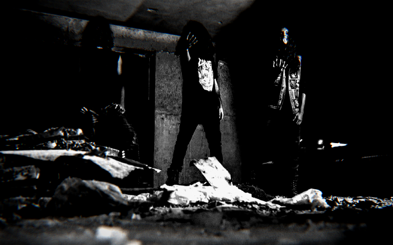
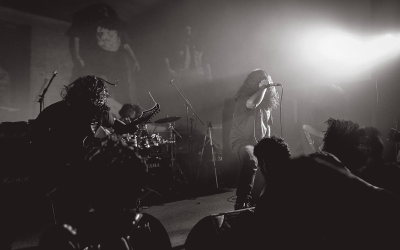
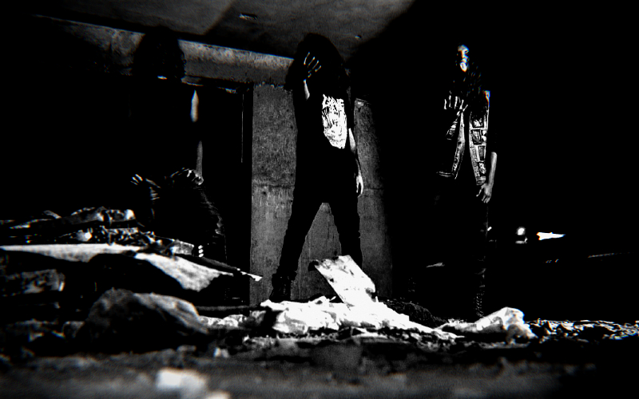
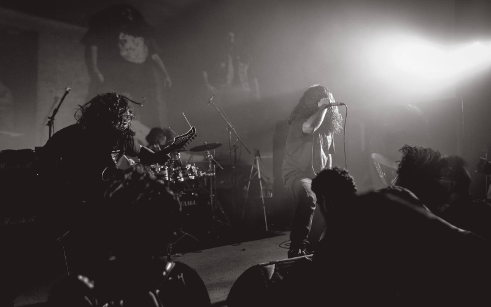

Kaal Akuma is a death metal band from the crypts of Dhaka, Bangladesh. Formed in late 2018, the band leans towards the more atmospheric approach to music while keeping their OSDM influences intact. Lyrical philosophy of the band includes, psychological Horror, Mayan mythology, death and darkness. The three piece band performed in Several live gigs throughout the country where their evil ambietic sound gained a cult following. The debut full length album "In The mouth Of Madness" is releasing in all formats from dunkelheit produktionen, Germany. The album have been mixed in "Studio Baksho" , Dhaka; mastering was done in Liquid Aether Studios, Germany. The band is currently working on their second release.
Lineup: Plague – guitars
Tiyanak – bass/vocal
Ah puch - drums
Listen to our latest demo track from the debut album.